「どちらでレコーディングですか?
ロスですか、ニューヨークですか?」
秋田です。
北村英治さん「Delivery」録音(2000年)のエピソードより
河内スタヂオは、秋田県大潟村にあるプライベート・レコーディングスタジオです。1999年の開設以来、残響0.7秒に整えた部屋とスタインウェイのフルコンサートグランドで、多くのジャズ・ミュージシャンの録音を手がけてきました。
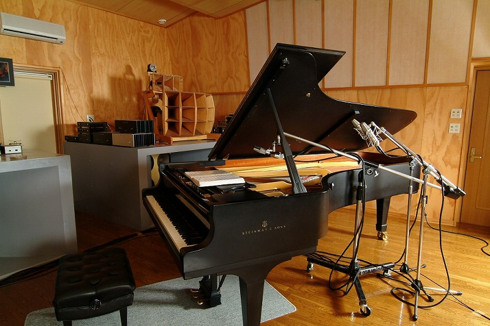
Recordings
ここで生まれた録音
北村英治さんをはじめ、国内外のジャズ・ミュージシャンが大潟村まで足を運び、数日かけてゆっくり録音していきました。点を押すと、その作品に移動します。
- 2008.01.28–31

A Square Song Book
和泉宏隆トリオ和泉宏隆 (p) / 村上聖 (b) / 板垣正美 (ds)
「うわ〜これは私が求めていた音、まさに Steinway D の音だ!」和泉宏隆さん、調律を終えたピアノを弾いて
レコーディングレポートを読む - 2005.07

Cookin'
北村英治 & バディ・デフランコ北村英治 (cl) / Buddy DeFranco (cl) / 竹下清志 (p) / 遠山晃司 (b)
「河内スタヂオの台所を占領し、安心して食べてもらえる様にがんばった。」北村英治さん、ライナーノーツより
レコーディングレポートを読む - 2004.09.01–03
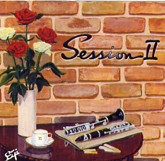
- 2004.07.14

- 2004.01 発売
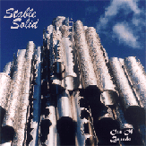
Stable Solid
Out Of Bounds(秋田大学医学部ジャズ研OB会)秋元康志 (p) / 谷口章 (g) / 鈴木明義 (ts, ss) / 児玉隆仁 (b) / 守時由起 (ds)
レコーディングレポートを読む - 2003.07.05–07
Vintage
北村英治 with スコット・ハミルトン、エディ・ヒギンズ北村英治 (cl) / Scott Hamilton (ts) / Eddie Higgins (p) / 遠山晃司 (b)
「各音像にシャープなフォーカスでスッキリと分離させたクリーンな録音。」stereo 2004年1月号
stereo 2004年1月号 優秀録音 9.6点スイングジャーナル 2004年3月号 録音評「今月のベスト・アルバム」レコーディングレポートを読む - 2002.12.16–21
- 2002.08.29

Sukiyaki
Village Be Bop Quintet(ライブ録音)Vincent Herring (as) / Tardo Hammer (p) / William Ash (g) / Billy Johnson (b) / 小林陽一 (ds)
「エンジニアが運営するスタジオでのライブというのも成功の決め手か。」スイングジャーナル 2002年12月号 録音評
スイングジャーナル 2002年12月号 録音評「今月のベスト・アルバム」レコーディングレポートを読む - 2002.07.16–19

- 2001.06
- 2001.06.17–19
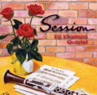
- 2000.12.01–03

My Song Book
角の りょう角の りょう (vo) / 宮之上貴昭 (g) / 宇多慶記 (p, key) / 稲垣護 (b) / 高橋信之介 (ds)
stereo 6月号 優秀録音 9.6点2001年上半期 優秀録音ベスト10作品について読む - 2000.11.26–29
- 2000.05.28–30
Delivery
北村英治 & 宮之上貴昭北村英治 (cl) / 宮之上貴昭 (g)
「純正・無添加、一切の作意的な処理を否定したピュアな高純度のレコーディング。」stereo 11月号
stereo 11月号 CD優秀録音 ジャズ部門最高得点 9.8点レコーディングレポートを読む - 2000.01.09–11

Sweet & Lovely
熱田修二 & 宮之上貴昭熱田修二 (tp) / 宮之上貴昭 (g) / 山口雄三 (b) / 高橋信之介 (ds)
「スタジオの静けさは演奏の中にも聴き取れる。」スイングジャーナル 10月号 録音評
スイングジャーナル 10月号 録音評「今月のベスト・アルバム」レコーディングレポートを読む - 1999.08–09
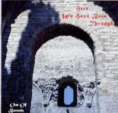
- 1999.02
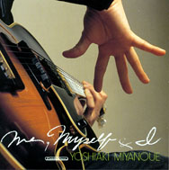
- 1999.01.29
More Recordings
そのほかの収録作品
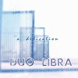
DUO LIBRA和泉宏隆 & 榊原長紀 On The Way To The CatwalkThe CATWALK 30th Anniversary Special Band feat. 和泉宏隆 covers NOSTARSIA和泉宏隆トリオ
covers NOSTARSIA和泉宏隆トリオ
 Beyond The River和泉宏隆トリオ
Cat Walk 25th Anniversary和泉宏隆 / 河上修 / 太田徹
Beyond The River和泉宏隆トリオ
Cat Walk 25th Anniversary和泉宏隆 / 河上修 / 太田徹
 Rifftide金子亜里紗
Our Respects to Bud金子亜里紗
Rifftide金子亜里紗
Our Respects to Bud金子亜里紗
 The Scene Is Clean金子亜里紗
The Scene Is Clean金子亜里紗
 It's So Peacefulさがゆき
It's So Peacefulさがゆき
 Sunset Street宮之上貴昭
Spirit宮之上貴昭
Sunset Street宮之上貴昭
Spirit宮之上貴昭
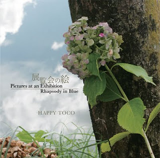
展覧会の絵ハッピー・トコ 四人は今日もハッピー・トコ
四人は今日もハッピー・トコ
Press
専門誌の評価
オーディオ誌「stereo」やジャズ誌「スイングジャーナル」の録音評で、たびたび高い評価をいただきました。
- stereo 2004年1月号 優秀録音 9.6点9.6 点Vintage 北村英治 with スコット・ハミルトン、エディ・ヒギンズ
- スイングジャーナル 2004年3月号 録音評「今月のベスト・アルバム」ベスト・アルバムVintage 北村英治 with スコット・ハミルトン、エディ・ヒギンズ
- スイングジャーナル 2002年12月号 録音評「今月のベスト・アルバム」ベスト・アルバムSukiyaki Village Be Bop Quintet(ライブ録音)
- stereo 12月号 優秀録音 9.8点9.8 点Session 北村英治カルテット
- stereo 6月号 優秀録音 9.6点9.6 点My Song Book 角の りょう
- 2001年上半期 優秀録音ベスト10ベスト10My Song Book 角の りょう
- Stereo Sound 2001 Autumn No.140 掲載掲載Touch! 宇多慶記
- stereo 11月号 CD優秀録音 ジャズ部門最高得点 9.8点9.8 点Delivery 北村英治 & 宮之上貴昭
- スイングジャーナル 10月号 録音評「今月のベスト・アルバム」ベスト・アルバムSweet & Lovely 熱田修二 & 宮之上貴昭
Musicians
河内スタヂオで録音した音楽家
- 北村英治cl
- Buddy DeFrancocl
- Scott Hamiltonts
- Eddie Higginsp
- Vincent Herringas
- 和泉宏隆p
- 宮之上貴昭g
- 世良譲p
- 熱田修二tp
- 吉岡秀晃p
- 小林陽一ds
- 山田穣as
- 金子亜里紗p
- 大野めぐみvo
- 小笠原千秋vo
- さがゆきvo
- 角の りょうvo
- 宇多慶記org
- 高浜和英p, vo
- 竹下清志p
- 遠山晃司b
- 山口雄三b
- 稲垣護b
- 八城邦義ds
- 太田耕平ds
- 高橋信之介ds
- 榊原長紀g
The Room
音がきれいに響く部屋
ジャズに取り憑かれ、ブルーノートやコンテンポラリーのサウンドに魅せられて、自分でも録音してみたくなり、長年の夢だった録音スタジオを自宅に作ってしまいました。
録音しないときはリスニングルームとして使うため、「無線と実験」でおなじみの金田明彦先生に残響時間の計算をしていただき、響きの綺麗なスタジオを目指しました。
河内伸介(「Delivery」ライナーノーツより)
残響時間 0.7 秒
心地よく響く残響をめざして設計しました。北村英治さんも「ここは残響がとってもいいんだ」と気に入ってくださっています。
平行な壁面がない
向かい合う壁をすべて角度をつけて配置し、音をほどよく拡散させています。クリアな音に定評があります。
Steinway D-274
スタインウェイ社のフルコンサートグランドピアノを常設しています。
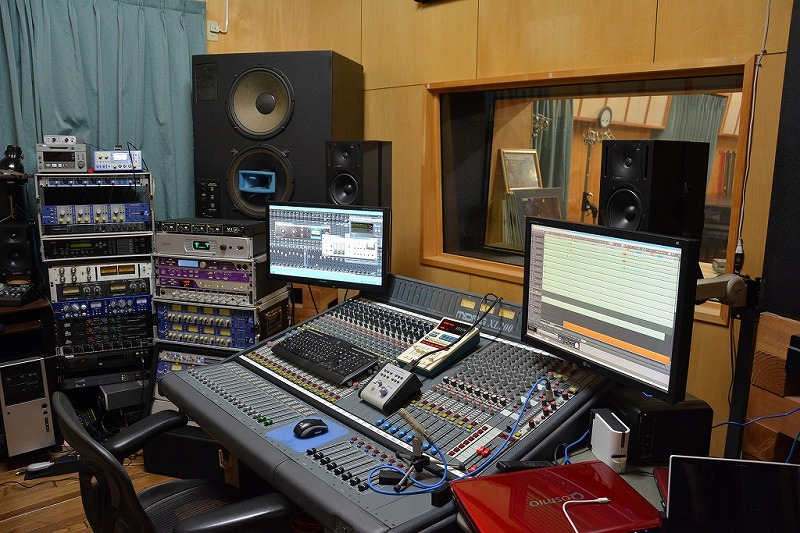
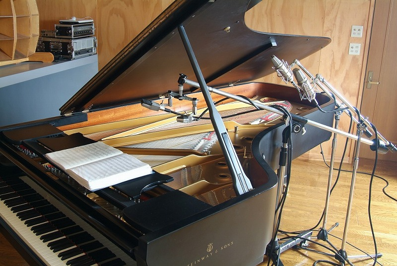
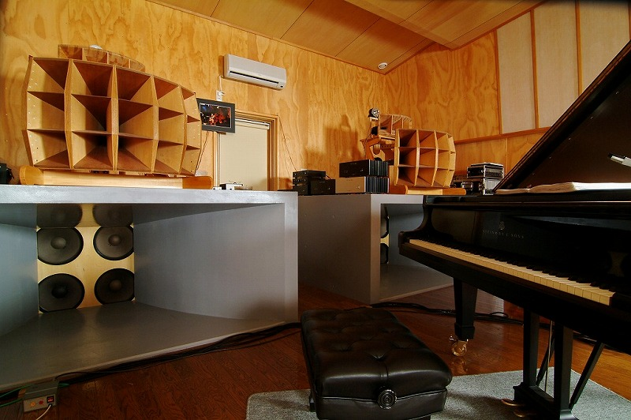
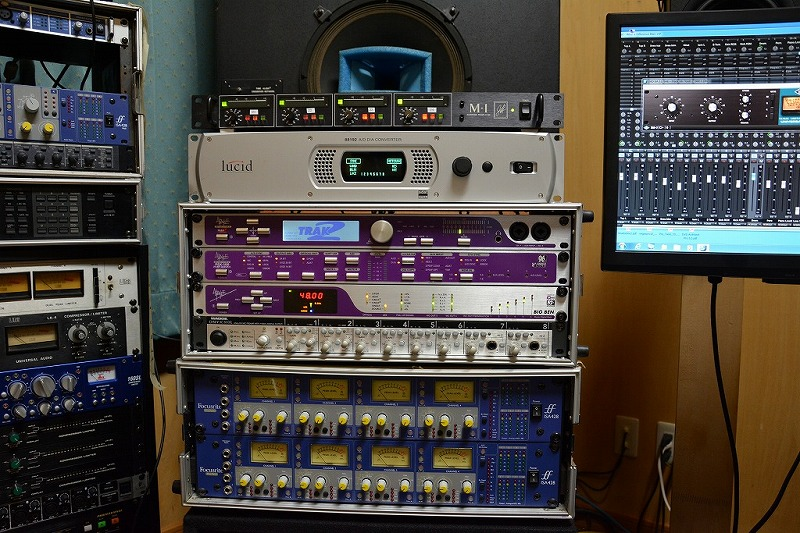
CONSOLE / MONITOR
- MIDAS XL200
- UREI 813B
- GENELEC 1030A / 1029A
MIC PREAMP
- Focusrite ISA428×3
- Focusrite ISA428 MkⅡ
- John Hardy M-1 4ch
- Apogee TRAK 2
MICROPHONE
- NEUMANN U87×4
- NEUMANN U87 Ai×2
- SCHOEPS CMC64×2
- DPA 4006×2
- RCA 77
OUTBOARD
- Lexicon 300L
- UREI 1178 / LA-4
- dbx 160X×3
- Apogee PSX-100
機材の一覧をすべて見る
CONSOLE
- MIDAS XL200
MONITOR
- UREI 813B
- GENELEC 1030A
- GENELEC 1029A
MIC PREAMP
- Focusrite ISA428×3
- Focusrite ISA428 MkⅡ
- John Hardy M-1 4ch
- Apogee TRAK 2
- MACKIE ONYX 800R
- Focusrite ISA ONE
DAW / INTERFACE
- Samplitude Pro X Suite
- Pro Tools
- Universal Audio UAD-2 Quad
- RME HDSPe RayDAT
- Apogee Big Ben (master clock)
- RME Fireface 800
AD / DA
- Apogee PSX-100
- Apogee Mini-DAC 192k
- Lucid 88192
- Lucid 8824×3
OUTBOARD
- Lexicon 300L
- YAMAHA Pro R2
- UREI 1178
- UREI LA-4
- dbx 160SL
- dbx 160X×3
MICROPHONE
- NEUMANN U87×4
- NEUMANN U87 Ai×2
- AKG C414 EB×2
- AKG Solid Tube×2
- SONY C-38B×3
- NEUMANN SM69 FET
- SCHOEPS CMC64×2
- Earthworks TC30K×2
- DPA 4006×2
- DPA 4090×2
- Telefunken M221B
- AKG C451E×2
- AKG C451EB
- RCA 77
- Electro-Voice RE20×2
- Sennheiser MD421×5
- Shure SM58×2
- Shure SM57×2
Access
大潟村へのアクセス
- 住所
- 〒010-0445
秋田県南秋田郡大潟村西2-2-35 - 電話
- 0185-45-2009
- 空港から
- 秋田空港から車で約1時間
河内スタヂオはプライベートスタジオです。録音のご相談は、お電話でお問い合わせください。